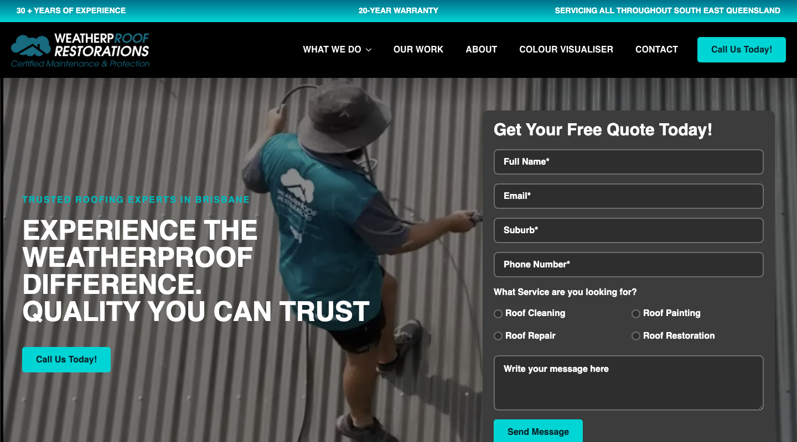
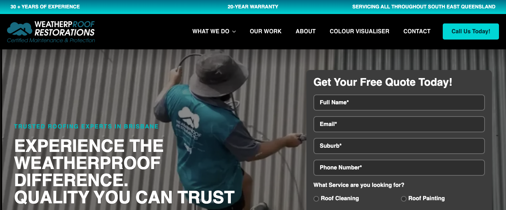
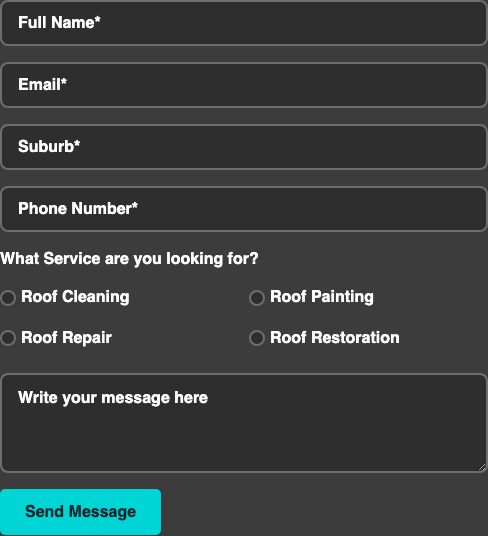
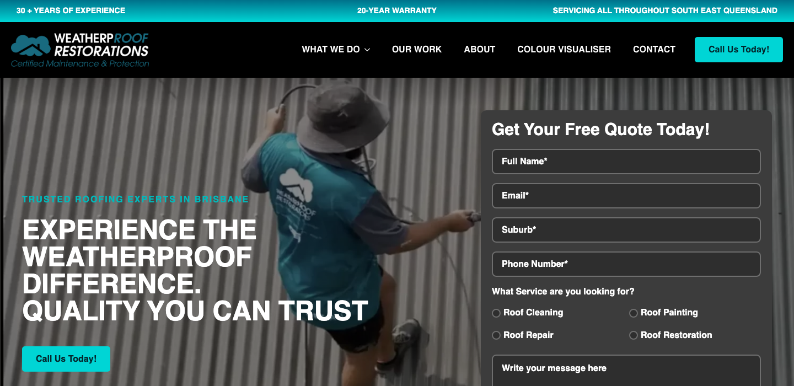

Internal Audit Report · ProfitsLocal
WeatherpRoof Restorations
roofing ·Brisbane · ★ 4.9 (134 reviews)
总体判断
审计概览
audit_score=61 → moderate_candidate · weakest: seo 34, visual 50 · fired: high_traction_old_site · 1 critical issues
已触发 hard triggers
联系方式 + GBP 快照
商家档案
independent_https_site六维度评分总览
每个维度的强弱在哪
现场证据 · 桌面 + 移动
客户访问时看到的页面


关键问题 · 1 项
立刻在伤害成交的硬伤
phone_visible_above_fold
命中原因phone hidden below fold or missing
证据截图 · Desktop 800px region

主要问题 · 2 项
影响转化的明显短板
homepage_title_clear
命中原因title='# EXPERIENCE THE WEATHERPROOF DIFFERENCE. QUALITY YOU CAN TR' contains-name=true contains-niche=false
证据截图 · Desktop 600px region

local_schema_markup
命中原因no LocalBusiness JSON-LD
证据 · 1 JSON-LD block(s) found
{"@context":"https:\/\/schema.org","@graph":[{"@type":"WebPage","@id":"https:\/\/weatherproof.net.au\/","url":"https:\/\/weatherproof.net.au\/","name":"Home - Weatherproof Restorations","isPartOf":{"@id":"https:\/\/weatherproof.net.au\/#website"},"datePublished":"2025-06-04T12:22:00+00:00","dateModified":"2025-07-04T00:54:16+00:00","breadcrumb":{"@id":"https:\/\/weatherproof.net.au\/#breadcrumb"},"inLanguage":"en-US","potentialAction":[{"@type":"ReadAction","target":["https:\/\/weatherproof.net.au\/"]}]},{"@type":"BreadcrumbList","@id":"https:\/\/weatherproof.net.au\/#breadcrumb","itemListElement":[{"@type":"ListItem","position":1,"name":"Home"}]},{"@type":"WebSite","@id":"https:\/\/weatherproof.net.au\/#website","url":"https:\/\/weatherproof.net.au\/","name":"Weatherproof Restorations","description":"","potentialAction":[{"@type":"SearchAction","target":{"@type":"EntryPoint","urlTemplate":"https:\/\/weatherproof.net.au\/?s={search_term_string}"},"query-input":{"@type":"PropertyValueSpecification","valueRequired":true,"valueName":"search_term_string"}}],"inLanguage":"en-US"}]}规则细节 · 39 项明细
每条规则的命中与失分原因
Google Business Profile 61/100 8 规则
| 规则 | 命中 | 得分 | 原因 |
|---|---|---|---|
has_website_link | ✓ | 10/10 | website: https://weatherproof.net.au/ |
review_volume_vs_peers | ✓ | 25/25 | 134 reviews |
average_rating | ✓ | 10/10 | ★4.9 |
has_hours | ✗ | 0/5 | no hours |
image_count | ✓ | 6/10 | 6 images |
has_business_description | ✓ | 10/10 | description present |
has_service_area | ✗ | 0/15 | no service area |
owner_replies_to_reviews | — | 0/15 | reply rate not enriched |
Technical 58/100 7 规则
| 规则 | 命中 | 得分 | 原因 |
|---|---|---|---|
https_enabled | ✓ | 20/20 | https |
first_paint_under_3s | — | 0/25 | LCP not measured (need Playwright/Lighthouse) |
mobile_responsive | ✓ | 30/30 | lighthouse mobile 80 |
core_web_vitals_pass | — | 0/10 | CWV not measured |
form_submittable | ✓ | 5/5 | form submits |
no_console_errors | ✗ | 0/5 | 2 console errors |
favicon_and_meta | ✗ | 3/5 | favicon: yes, meta: no |
UX & Conversion 70/100 7 规则
| 规则 | 命中 | 得分 | 原因 |
|---|---|---|---|
above_fold_cta_within_5s | ✓ | 30/30 | CTA keyword found above fold |
phone_visible_above_fold | ✗ | 0/20 | phone hidden below fold or missing |
click_to_call_link | ✓ | 10/10 | tel: link present |
quote_or_booking_form | ✓ | 20/20 | <form> element present |
contact_path_short | — | 0/10 | click-depth not measured |
has_gallery | ✓ | 5/5 | gallery mentioned |
has_testimonials | ✓ | 5/5 | testimonials section present |
Content 77/100 6 规则
| 规则 | 命中 | 得分 | 原因 |
|---|---|---|---|
homepage_title_clear | ✗ | 12/20 | title='# EXPERIENCE THE WEATHERPROOF DIFFERENCE. QUALITY YOU CAN TR' contains-name=true contains-niche=false |
service_copy_specific | ✓ | 20/20 | 62 service-related verbs detected |
trust_signals_present | ✓ | 20/20 | 25 trust-keyword mentions |
localized_content | ✓ | 15/15 | mentions brisbane |
evidence_of_recent_update | ✗ | 0/15 | no recent year (≤ 1 year ago) |
non_ai_filler_copy | ✓ | 10/10 | no obvious AI-filler |
SEO 34/100 5 规则
| 规则 | 命中 | 得分 | 原因 |
|---|---|---|---|
title_meta_present | ✗ | 14/25 | title=yes meta=no |
h1_unique | ✓ | 20/20 | 1 <h1> tags |
local_schema_markup | ✗ | 0/20 | no LocalBusiness JSON-LD |
image_alt_present | ✗ | 0/20 | 19 images, 0% with alt |
sitemap_robots | — | 0/15 | /sitemap.xml + /robots.txt probe not run (need Playwright) |
Visual 50/100 1 规则
| 规则 | 命中 | 得分 | 原因 |
|---|---|---|---|
visual_dimension_stub | — | 50/100 | visual dimension is filled by Block E (vision LLM autoresearch) |
视觉审计 · Vision LLM
设计观感的整体诊断
The site uses an outdated teal/black color scheme with busy hero imagery and multiple conflicting CTAs that reduce clarity for mobile visitors.
dated_teal_cyan_accent
观察到The primary accent color is a bright teal/cyan (#00CED1 range) used for all buttons, the top banner text '30+ YEARS OF EXPERIENCE', and overlay text like 'TRUSTED ROOFING EXPERTS IN BRISBANE'
为什么是问题This teal/cyan was popular in 2012-2016 web design but now signals an outdated business; local searchers associate modern roofing companies with earth tones (charcoal, navy, forest green) or warm accent colors, not neon cyan
正确长啥样A 2025 roofing site would use a deep charcoal or navy base with a warm accent like coral, terracotta, or gold — colors that evoke trust, permanence, and Australian roofing heritage
redesign 怎么改Replace all teal/cyan (#00CED1) with a warm coral or terracotta accent (#FF6B4A, #E07856); update all button backgrounds, banner backgrounds, and overlay text to use the new palette
证据截图 · Desktop 700px region

multiple_competing_ctas
观察到On mobile, there are three teal buttons: 'Call Us Today!' appears twice (once mid-hero, once at bottom), plus an 'Enquire Now' button at the bottom — all identical in style with no hierarchy
为什么是问题When a mobile visitor searching 'roofing Brisbane' lands here, they face three identical-looking buttons and must decide which to tap; this creates decision paralysis and many will scroll past all three without acting
正确长啥样A single prominent phone CTA above the fold ('Call Now' with the actual phone number visible) and one secondary form button below, with clear visual hierarchy — primary is larger/bolder, secondary is outlined or smaller
redesign 怎么改Remove duplicate CTAs; show one primary 'Call [phone number]' button above fold in a warm accent color, make it tap-to-call; add one secondary 'Get Free Quote' button lower down in outlined style
证据 · 移动端截图
busy_hero_background_legibility
观察到The hero image shows a worker on a corrugated metal roof with strong vertical line patterns; white text is overlaid with a dark semi-transparent overlay, but the corrugation ridges create visual noise behind 'EXPERIENCE THE WEATHERPROOF DIFFERENCE'
为什么是问题The corrugated pattern competes with the headline text, forcing visitors to work harder to read the value proposition; mobile visitors scrolling quickly may skip past entirely because the text doesn't pop cleanly
正确长啥样A hero image with a simpler background (e.g. a finished roof against sky, a clean roofline) or a solid color block behind the text so white letters have clean contrast without competing patterns
redesign 怎么改Either use a different hero image with a less busy background (blue sky, clean facade), or add a solid 80% black rectangle behind the headline text to ensure crisp legibility on all screens
证据截图 · Desktop 700px region

desktop_form_too_demanding
观察到The right-side form on desktop labeled 'Get Your Free Quote Today!' contains 7 input fields (Name, Email, Phone Number, Service Type dropdown with 4 options including 'Roof Cleaning', 'Roof Painting', plus 'How long have you had your roofing for?' and 'Body text message box') all visible before scrolling
为什么是问题A local searcher who just found the site via 'roofing Brisbane' doesn't yet trust the business enough to fill in 7 fields; they'll see the form, feel it's too much work, and either leave or call a competitor with a simpler form
正确长啥样A 2-3 field micro-form above the fold: Name, Phone, and a single-line 'What do you need?' text box, with a prominent submit button; or just a big 'Call Now' button with the phone number visible
redesign 怎么改Replace the 7-field form with a 3-field form: Name, Phone, and 'Tell us briefly what you need' (single line); move all other fields to a secondary detailed form on a separate 'Get Quote' page
证据截图 · Element: form

no_phone_number_visible
观察到Neither screenshot shows an actual phone number anywhere — only 'Call Us Today!' buttons; the top navigation on desktop has a 'CONTACT' link but no visible click-to-call number in the header or hero area
为什么是问题70% of local roofing searches are from mobile users who want to call immediately; if they can't see the phone number, they have to tap a button and wait for a page to load, or they'll just tap back and call the next result that shows a number
正确长啥样Phone number displayed in the top-right of desktop header and directly below the logo on mobile (e.g. '07 3XXX XXXX' or '1300 XXX XXX') so it's tap-to-call without any extra steps
redesign 怎么改Add the business phone number in the desktop header top-right in a large, bold font; on mobile, place it directly below the logo in a tap-to-call format; keep it visible on scroll (sticky header)
证据 · 移动端截图
generic_stock_photo_style
观察到The hero image shows a worker in a teal shirt on a corrugated roof, but it's shot from behind and could be any generic roofing company anywhere; there's no recognizable Brisbane context (no Queenslander-style homes, no local landmarks, no before/after of real local projects)
为什么是问题A searcher looking for 'roofing Brisbane' wants to see that you actually work in Brisbane on homes like theirs; a generic stock-style photo (even if it's a real photo) doesn't build local trust the way a recognizable local project would
正确长啥样A hero image showing a completed roof restoration on a classic Brisbane Queenslander home, or a split-screen before/after of a real local project, or the team in front of a recognizable Brisbane suburb backdrop
redesign 怎么改Replace hero image with a photo of a completed Queenslander roof restoration or a before/after of a real Brisbane project; add a caption like 'Recent restoration in Paddington' to reinforce local presence
证据截图 · Desktop 700px region

teal_banner_unnecessary_clutter
观察到A bright teal horizontal banner spans the full width at the very top with white text '30+ YEARS OF EXPERIENCE' on desktop and mobile
为什么是问题This banner takes up precious above-the-fold space and uses a loud color that draws the eye away from the hero message and CTA; the experience claim could be integrated into the hero or header more elegantly
正确长啥样The '30+ years experience' claim integrated into the hero headline or as a small badge near the logo, freeing up vertical space for a cleaner hero and more visible CTA
redesign 怎么改Remove the teal banner; instead, add '30+ Years Serving Brisbane' as a small text badge below the logo, or integrate it into the hero subheading in a lighter weight font
证据截图 · Desktop 700px region

需要保留的优点
- The headline 'EXPERIENCE THE WEATHERPROOF DIFFERENCE. QUALITY YOU CAN TRUST' clearly communicates the value proposition and brand name
- The site displays a real worker photo (even if generic) which is better than pure stock imagery and shows an actual person doing roofing work
- Mobile version is responsive and text is legible at standard zoom levels
Redesign 优先级
- 1. Replace teal/cyan accent with a warm modern color (coral/terracotta) and simplify to one primary CTA above fold with visible phone number
- 2. Reduce desktop form from 7 fields to 3 fields (Name, Phone, Brief description) and display phone number prominently in header on all devices
- 3. Replace hero image with a recognizable Brisbane Queenslander roof project and add a solid text background for clean legibility
客户评论分析 · Google Reviews
客户在 Google 上怎么夸 / 怎么抱怨
Customers overwhelmingly praise the business for its honesty, professionalism, and clear communication, particularly valuing transparent assessments that avoid unnecessary upsells. A single severe complaint regarding poor workmanship and communication exists, but it appears to be an outlier against a backdrop of consistent high satisfaction.
客户一致夸赞
抱怨 / 短板
可直接用在 redesign 的 quote
"Weatherproof Restoration was the only one that responded... I really appreciated his honesty and professionalism."
放哪Hero section proof of integrity and responsiveness
"Great response and quick resolution to a minor concern we raised - sign of a quality, trustworthy business."
放哪Trust section highlighting after-care and reliability
"From my first contact with them to my last contact they were very friendly, kept up communication."
放哪Process section emphasizing customer experience
商家回复观察
No owner replies are visible in the provided sample data. The absence of responses to the negative review is a potential risk, though the high volume of positive reviews currently masks this gap.
Redesign 可发力的钩子
- Feature Joe Lin's review prominently to counter 'scam' fears common in roofing by highlighting honest, no-upsell inspections.
- Use Sam Pengelly's quote in a 'Why Choose Us' section to demonstrate proactive problem-solving and trustworthiness.
- Highlight the peer endorsement from Elizabeth High to establish industry credibility and quality assurance.
加载速度证据 · 慢速 4G 移动网络
客户在手机上看到的真实加载体验
下方视频在 1.6 Mbps 下行 / 150ms 延迟 / 4× CPU 节流条件下录制 — 这是大多数本地搜索访客在手机上真实看到的体验。
⏳ Mockup 站点对比视频 — 等 ProfitsLocal 真实 mockup 上线后录制 side-by-side 对比。
销售切入点
从 audit 数据自动推导的开场话术
- 你已经有不错的 Google 流量基础，但网站设计在浪费这些点击
- 有 1 个 critical 级问题正在直接伤害成交